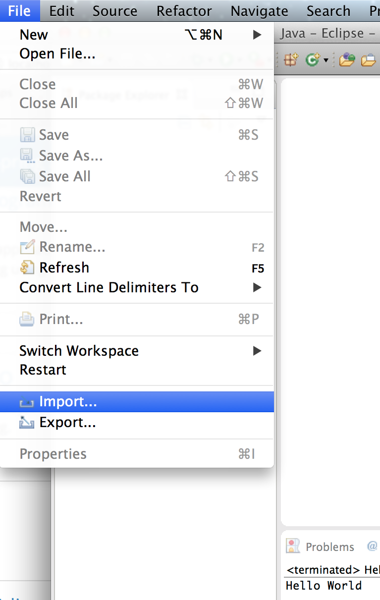
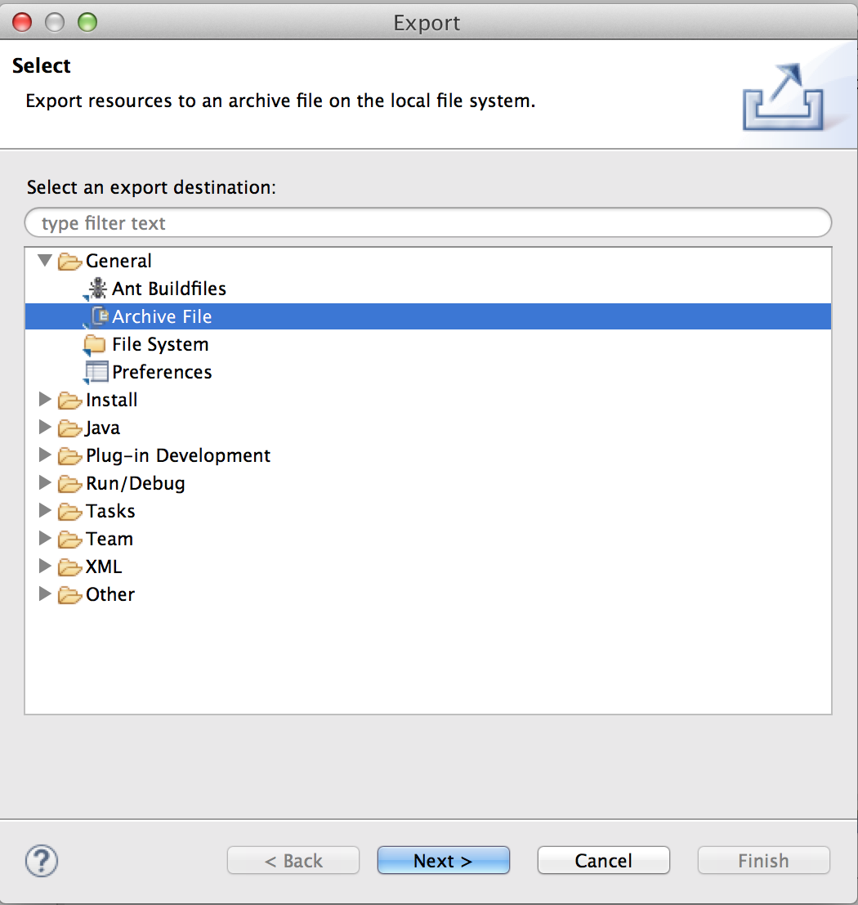

Working with Eclipse projects
Working with Eclipse can be a little bit tricky at first, but. There are usually many correct ways to do things, but they don’t all work all the time.
Importing an Eclipse project
You can import a project into eclipse by either going to the file menu or right-clicking in the package explorer:
|  | OR |
{kind=link}
{kind=link}
| Then go to General > Existing Projects into Workspace | select archive file, and browse to the zip file on your computer. | |
 |
{kind=link}
If you (or your computer) has unzipped the project, select “root directory” instead and browse to the folder.
Exporting an Eclipse project
Whenever you submit an assignment, you will need to export it from Eclipse as a zip file. The simplest way to export a project in Eclipse is to right-click on the project in the package explorer:
| Select “Export” | Navigate to General > Archive file… | |
|  |
{kind=link}
…and choose the path to the archive file.
{kind=link}
Deleting an Eclipse project
In an Eclipse workspace, you can only have one project with the same name. That means if you want to try a WOD again that relies on importing a project, rather than creating a new one from scratch, you will need to either:
- Create a new workspace,
- Rename your last attempt, OR
- Delete your last attempt
When deleting a project from eclipse, make sure you delete the contents from disk so you don’t have naming conflicts in future:
{kind=link}
This cannot be undone, so make sure you don’t want the code anymore!
Creating a new Eclipse project
As with importing, you can create a new Java project in eclipse by either going to the file menu or right-clicking in the package explorer:
| OR |
{kind=link}
{kind=link}
If you don’t see the Java Project option, go to “Other”…
{kind=link}
… and navigate to Java > Java Project.

Next, name your project and hit “Finish”.